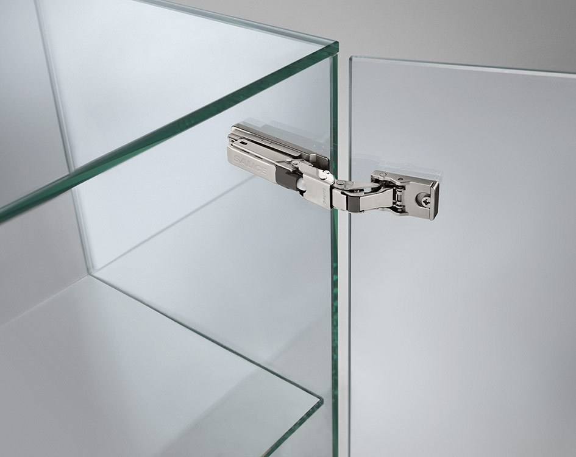

CREATURA
SALICE
05 / 22
Петли · для стеклянных дверей

Universal hinges
Доводчик · Push · с пружиной
Петли для стеклянных фасадов: стекло сверлить не нужно.
Открывание
110°
Применение
накладные, полунакладные, фасады с профилем
Монтаж
Domi или традиционные планки